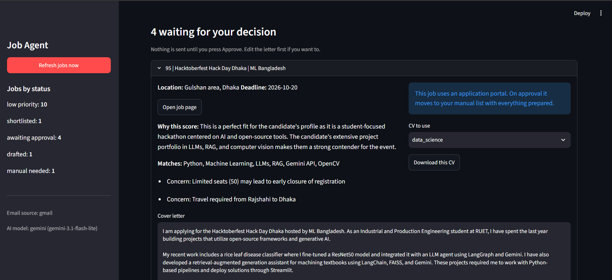

Automated career assistant parsing email vacancy alerts, scoring candidate fit, and managing applications.

The AI Job Discovery & Matching Assistant is a personal job-search automation project designed to streamline vacancy collection via Gmail API, candidate-job matching against criteria, and application tracking through an SQLite and Streamlit dashboard.